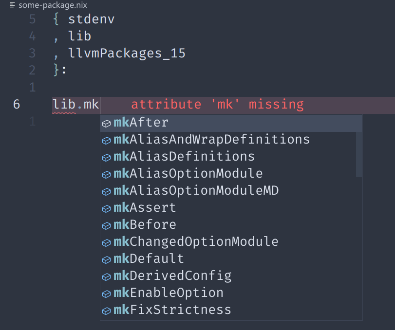
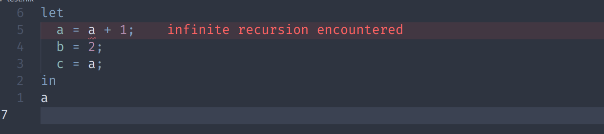
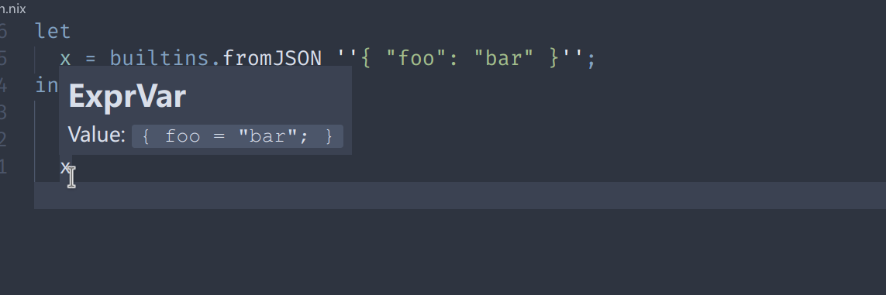
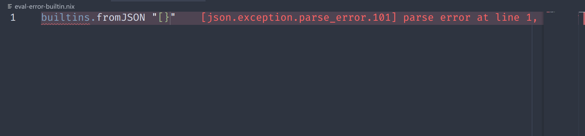

nixd
WIP Note 🚧
nixd-next is still WIP! Please see https://github.com/nix-community/nixd/issues/283 for the migration plan.
Released versions contain stable nixd code. If you encountered any problem with this nightly version, please use to our released version in nixpkgs.
The following description is suitable for stable releases, but outdated for nixd-next (i.e. this version).
About
This is a Nix language server that directly uses (i.e., is linked with) the official Nix library (https://github.com/NixOS/nix).
Some notable features provided by linking with the Nix library include:
- Nixpkgs option support, for all option system (NixOS/home-manager/flake-parts).
- Diagnostics and evaluation that produce identical results as the real Nix command.
- Shared eval caches (flake, file) with your system's Nix.
- Native support for cross-file analysis (goto definition to locations in nixpkgs).
- Precise Nix language support. We do not maintain "yet another parser & evaluator".
- Support for built-ins, including Nix plugins.
Features Preview
Home-manager options auto-completion & goto declaration
See how to configure option system: https://github.com/nix-community/nixd/blob/main/nixd/docs/user-guide.md#options
Write a package using nixd
Native cross-file analysis

We support goto-definition on nix derivations! Just Ctrl + click to see where is a package defined.
And also for nix lambda:
See how to configure the evaluator for cross-file analysis: https://github.com/nix-community/nixd/blob/main/nixd/docs/user-guide.md#evaluation
Handle evaluations exactly same as nix evaluator

Support all builtins

And diagnostic:

Get Started
You can try nixd without installation. We have tested some working & reproducible editor environments and example configurations & workspaces.
Resources
- Editor Setup
- User Guide
- Configuration Examples
- Developers' Manual (internal design, contributing):
- Project matrix room: https://matrix.to/#/#nixd:matrix.org